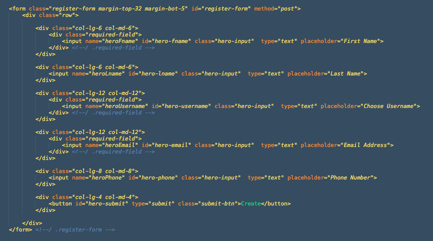
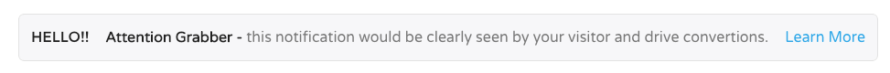

Urip ver 3.0
Professional Bootstrap Landing Page Template
created: 04/23/2015 updated: 10/12/2016 by: Works of Wisnu email: xwisnux@worksofwisnu.comProfessional Bootstrap Landing Page Template
created: 04/23/2015 updated: 10/12/2016 by: Works of Wisnu email: xwisnux@worksofwisnu.comThis is the documentation page for default/HTML version of Urip Landing Page. If you're looking for the documentation for Urip Builder please visit Builder Documentation.
All files and folders are well organized.
Above is the screenshot of the header, there you will find two anchor links, one is for your logo and another one is the sliding menu trigger.
To change the logo, you can simply adjust the image source into the path of your logo file.
This is the default menu of Urip, a sliding nav menu which will slide out after (hamburger)menu trigger clicked. Below is the structure of navigation menu.
The id="main-nav" is the main navigation menu that will scroll to the id of your element/section (using jQuery One Page Nav). While the class="secondary-nav" is the dummy navigation that can be used for external link. In the secondary nav there is an anchor link which has class contact-trigger, an anchor which has this class will trigger the overlay contact form.
Starting from version 1.1 Urip support dropdown navigation menu. To create a dropdown menu you need to add a class="dropdown" into a list item. For example please take a look at the screenshot on section 2.2 above, the last list item inside .main-nav there will have a dropdown menu.
Navigation bar available from Urip version 2.0. Different from the default menu, navigation bar has a menu list stretching on the top instead sliding in/out. You can find this navigation menu on Urip Event Layout. Below is the structure of navigation bar
If you want to add external link on main navigation, simply add .external class on the anchor link. For example:
<li><a class="external" href="http://google.com">Google</a></li>
To change the background image, find the following section on style.css file
As you can see from the screenshot above, on Session Video Background we use video poster image as fallback that will override the Youtube video background on mobile/touch devices.
Since Urip version 2.0, Stellar JS plugin will be used for parallax background section such as Hero and breaking section.
Below is the example code screenshot to make a breaking section or parallax section:
For more details about data-stellar-background-ratio="xx" data-stellar-vertical-offset="xx" please read it from Stellar JS documentation here.
To change the background please find the following section on style.css file
The video background that we are using on Event Layout hero is a Youtube video background using jquery.mb.YTPlayer. You can use any video from Youtube or upload your own videos to Youtube.
To use this plugin, first please include jquery.mb.YTPlayer.min.js and urip-ytplayer-setting.js to your HTML (currently only index-event.html that has been included these script on the package).
To setting video background section, first we need to call the video:
You can see the setting of how the video background work from the data-property above, and here is a bit explanation about it:
videoURL: URL to your Youtube video.containment: the id of section where you want to place the video background.startAt: time which video will begin playing at.mute: true to mute the audio, false to unmute.autoPlay: play video once ready.loop: loops video once ended.opacity: define the opacity of the video.showControls: show or hide the controls bar at the bottom of the page.Urip used class="container" from Bootstrap to wrap content and house the grid system. Therefore it has maximum width of 12 columns (1170px width on desktop screen). To make a full width column you need to change class container into class="container-full".
And to make padding-less column like the Featurettes section simply add class no-padding to the column class.
To make vertically center content like Hero section and Featurettes Quote you need to wrap your content inside 3 divs with class vertical-center-wrapper, vertical-center-table, and vertical-center-content. But first you need to define the height of your element, for example is the class featurettes-quote-wrapper from Featurettes Quote content, it has 500px height defined on the css.
Below is the screenshot of Expandable Gallery :
To add/edit the image just edit the image source under the .expandable-gallery-item list. To learn more about this gallery you can also visit Expendable Gallery page.
The content tab has basic structure like the tab from Bootstrap, so you can learn more about the basic tab here. One thing you need to do is wrap it with div class="content-tab-wrapper">
Similar with the content tab, the section tab also has basic structure from Bootstrap. While the content tab need to be wrapped with div class="content-tab-wrapper">, the section tab need to be wrapped with div class="section-tab">.
To create pricing tables you need to make a ul class="pricing" and then li class="price", wrap the li inside Bootstrap column class to set the width and column of a pricing table. If you have any recommended/special package of your product, add .best-value to the li. Below is the example of pricing table:
There are two kinds of subscription form in Urip, one in the hero section on Hero Subscribe Layout and another one in footer. Both integrated with Mailchimp service and works using jQuery Ajaxchimp.
Open urip.js file and find the Ajaxchimp JS section, replace the URL with your own mailchimp post URL
Just login to your Mailchimp account, go to your list or create a new one, head to the Signup Forms menu, select Embedded Form. There you will find "Copy/paste onto your site" section, find the URL inside form action="".

Contact form use contact.php to send the message to your email. The form itself will appear when a link with class="contact-trigger" clicked. To adjust the recipient address, please open the contact.php file, change the value of $to variable.
To adjust the form to meet what you need, you can edit the name, id, and placeholder of an input. A field under div class="required-field" will have a blue label at the top-right corner to indicate that the field must be filled. Below is a screenshot of the existing contact form:
Before the contact message sent, it needs to be validated to check whether all required fields have been filled correctly. To adjust the validation process, please open the urip.js file and head to Contact Form Validation section. You will find some validation code like this:
If you have custom field on your contact form, first you need to define the variable, give a variable name and define the id of the input. After that you need to define the validation just like code below // Form field validation comment. If the error variable it true then the error notification will appear and give a class of field-error to the parent div. If all the validation processes finished and no error found then the contact message will be sent using contact.php
Registration form placed on Hero Form Layout has similar functionality as how the contact form is working. It will also send email using hero-form.php. Below is the screenshot of the registration form:
If you check the Hero Form Layouts page you will find an attention box below the top clients logo section. This element is intended as an attention grabber to your visitor in case you have something to tell. Below are the screenshots of the attention box code and the result from Hero Form Layout:
The notification box will tell you if the form you're submitted is success or error. The notification box will appear after the form validation has been processed and the class="show-up" added. Below is the example of notification box for contact form:
This template uses Isotope plugin as content filter. This template use content filter in Our Team and Portfolio section./p>
Basically There are two main elements for this content filter, first is the Filter button:
The attribute data-filter is the class of the filter items which used as category, while the * mark indicating all categories. The next element is Filter item:
All items are wrapped with div class team-list, and each item has div class team-item, you can place your category class along with this div.
For making perfect team photo filter like the demo you need image with 270 x 320 pixels dimension. Or as long as you have a photo with 27:32 ratio (e.g. 540x640, etc) it would fit well.
Portfolio filter has similar functionality as team filter, it use filter list and item list. If you click on an image you will get larger photo lightbox by Swipebox.
The anchor links href attribute is addressing a large photo for the lightbox, while the img tag is the photo of your portfolio item.
Skill meter has similar structure as Bootstrap Progress Bar. But if bootstrap use attribute aria-valuenow, Urip use data-percent to define bar width.
Good news for you that want to create an RTL website using Urip template because start from version 1.1 Urip support RTL Layout.
To create an RTL site, you need some rtl css files. Inside css folder you will find:
To display Carousel, please include slick.min.js and urip-slick-carousel-setting.js to your HTML (currently only index-app.html that has been included these script on the package).
Below is the screenshot of carousel images on Urip App layout:
To change the screenshot images, just chage the image source inside .carousel-item with yours. Please use image with 295x524 pixels dimension. For more information/documentation about this carousel you can visit Slick Carousel page.
To display Countdown Timer, please include jquery.countdown.min.js and urip-countdown-setting.js to your HTML (currently only index-event.html that has been included these script on the package)
then open urip-countdown-setting.js file, there you will find some date like this '2015/11/21', replace with your date. And finally deploy <ul class="countdown-timer"></ul> to your HTML file to display the timer. For more details about Countdown Timer plugin please visit its official documentation here.
To display Instagram Gallery, please include instagram.min.js and urip-instagram-setting.js to your HTML (currently only index-event.html that has been included these script on the package)
then open urip-instagram-setting.js file, replace the value of clientId variable with yours. You can obtain a client id registering a new Instagram API client app at http://instagram.com/developer/clients/register/.
To display your instagram photos please check the screenshot below:
The demo on Urip Event layout is using hash: 'tnwconference' to display all Instagram's photos with that hashtag, please replace the hash value with yours. For more details about this plugin or another examples for displaying photos please check the documentation here.
Here is the list of jQuery plugins used in Urip. Visit their website to find more documentation:
Inside the js folder you will find urip.js file, this file is the set up for all javascript plugins above for all layouts of this template, except the slick carousel plugin which set inside the html code (App Layout) to avoid crash with other layout which not use carousel.
I've used the following images, icons or other files as listed. *for demo only
That's all! Please let me know if I missed something here :)